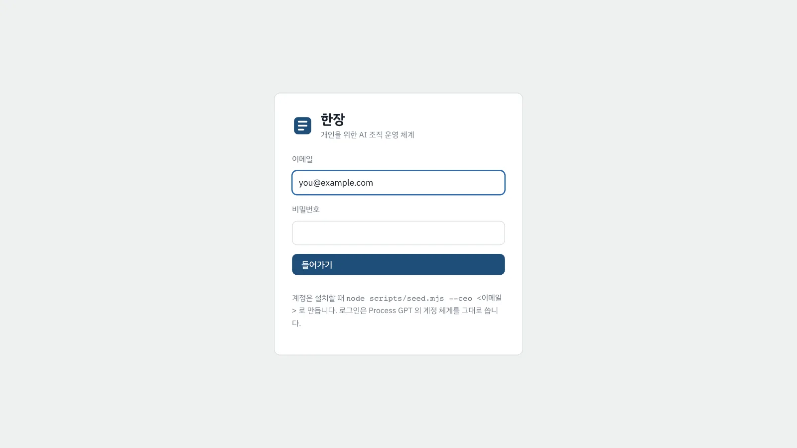
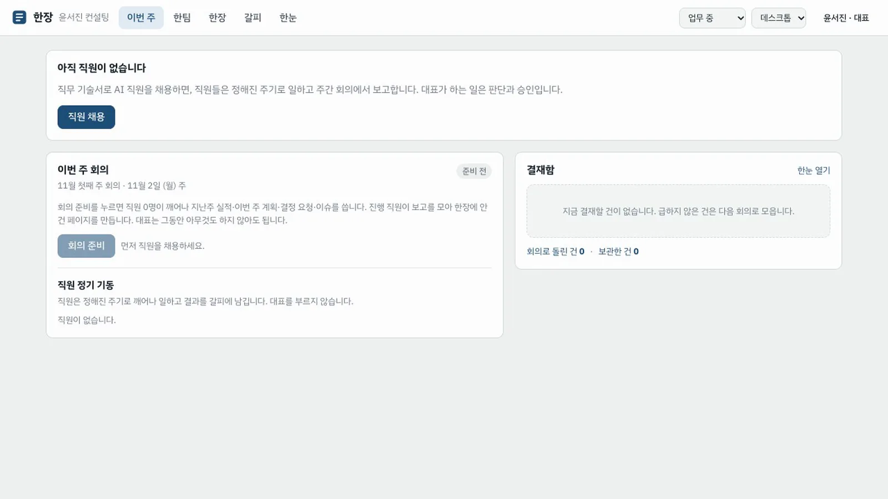

Process GPT 가 돌고 있는 컴퓨터에 한장 화면과 hanjang-mcp 를 올리고, 대표 계정으로 들어가 첫 화면을 둘러봅니다.
무엇을 · 왜#
한장은 화면만 새로 만들고 백엔드는 Process GPT 를 그대로 씁니다. 그래서 설치는 세 가지입니다.
| 할 일 | 무엇을 쓰나 |
|---|---|
| 한장 표와 SQL 함수를 Process GPT DB 에 넣기 | sql/0*.sql (공용 DB public 의 hj_ 표, 대표 본인 행만 보이는 RLS) |
| 새 마이크로서비스 하나 띄우기 | services/hanjang-mcp (:8740) — MCP 출구, 갈피 분할 엔진, 한눈 접수 |
| 화면 띄우기 | web/ (:5320) — Supabase 는 바로, deepagents 와 hanjang-mcp 는 같은 출처 프록시로 |
필요한 Process GPT 서비스는 Supabase(Kong :54321, DB :54322)와 deepagents :8888 입니다. deepagents 는 작업 목록 폴링을 켜 둡니다(기본값). 갈피 분할에는 context-router :8895 와 judge :8896 이 더 필요합니다.
따라 하기#
- 환경 파일 만들기. Process GPT 의
.env에서 한장이 쓸 값(anon 키, JWT 비밀, DB 비밀번호)을 읽어 두 파일을 만듭니다. 값은 화면에 찍히지 않습니다.node scripts/setup-env.mjs --pg /path/to/process-gpt/.env --llm-env /path/to/llm.env--llm-env파일에는 갈피가 묶음 요약에 쓸 OpenAI 호환 모델(HJ_LLM_BASE_URL,HJ_LLM_API_KEY,HJ_LLM_MODEL)을 적습니다. - DB 에 한장 표 넣기. 여러 번 돌려도 같은 결과가 됩니다.
for f in sql/0*.sql; do docker exec -i supabase-db psql -U postgres -d postgres -v ON_ERROR_STOP=1 -q < $f; done - 대표 계정 만들기. GoTrue 관리자 API 로 계정에
hanjang테넌트를 박아 만들고, 회사(공간·묶음·조직도 팀)를 만듭니다.비밀번호는node scripts/seed.mjs --ceo you@example.com --name 윤서진HJ_DEMO_PASSWORD환경 변수(없으면hanjang-demo-1)입니다. - hanjang-mcp 와 화면 띄우기.
(cd services/hanjang-mcp && npm i && node index.js) # :8740 (cd web && npm i && npx vite) # :5320 - 로그인. 브라우저에서
http://localhost:5320을 열고 3단계의 이메일과 비밀번호로 들어가기를 누릅니다.
- 첫 화면 둘러보기. 처음 보는 화면은 이번 주 회의와 결재함 두 칸뿐입니다. 직원이 아직 없으면 위에 직원 채용 안내가 나옵니다. 위 막대의 한팀 · 한장 · 갈피 · 한눈은 필요할 때 들어가는 화면입니다. 오른쪽 위의 상태(업무 중·고객 회의 중·이동 중·집중 시간)와 기기(데스크톱·모바일)는 한눈이 언제·어디로 알릴지 정하는 데 씁니다.

- 한장 작업대 열기. 위 막대의 한장을 누르면 왼쪽에 회사의 공간(운영·직원·고객 과제·리서치)이 보입니다. 페이지를 열면 오른쪽에 페이지 옆 채팅방이 열립니다. 댓글 대신 이 방에서 담당 직원에게 지시합니다.

Process GPT 화면에서도 보입니다
한장이 만든 직원은 Process GPT 의 에이전트이고, 회사는 Process GPT 조직도의 팀 하나입니다. 결재 요청은 Process GPT 작업 목록과 알림에도 나타납니다. 한장은 같은 데이터를 대표의 운영 화면으로 다시 보여 줄 뿐입니다.
확인 문제#
- 한장이 새로 띄우는 서버 프로세스는 몇 개이고, 무엇을 맡나요?
- 처음 들어온 대표가 보는 화면 두 가지는 무엇인가요?
정답
- 하나입니다. hanjang-mcp 가 MCP 출구, 갈피 분할 엔진, 한눈 접수를 맡습니다. 나머지는 화면이 Process GPT(Supabase·deepagents)를 직접 씁니다.
- 이번 주 회의와 결재함입니다. 조직도·직무 기술서·맥락 지도는 필요할 때 들어가는 화면으로 둡니다.